Мій підхід
У роботі для мене важливі уважність до людини, безпечний контакт, практичність і ясність. Формат підтримки підбирається під запит: індивідуальна консультація, триваліший супровід, груповий чи навчальний формат.
Запоріжжя, онлайн та виїзні формати для груп і тренінгів
Ганна Юріївна Стрюченко — психолог. Проводжу консультації в Запоріжжі офлайн та онлайн, а також виїжджаю в інші міста для VIP-консультацій, групових занять і тренінгів для клієнтів або фахівців. У роботі поєдную базову психологічну освіту, сучасні навчальні програми та практичний підхід до підтримки людей у складних життєвих обставинах.
Про мене
У роботі для мене важливі уважність до людини, безпечний контакт, практичність і ясність. Формат підтримки підбирається під запит: індивідуальна консультація, триваліший супровід, груповий чи навчальний формат.
У 2009 році закінчила Запорізький національний університет за спеціальністю «Психологія» та здобула кваліфікацію психолога. Додатково проходжу регулярне навчання і підвищення кваліфікації в сучасних напрямах психологічної допомоги.
Працюю в Запоріжжі офлайн та онлайн. Можливий виїзд в інші міста для VIP-консультацій, групових занять і тренінгів для клієнтів або спеціалістів.
Напрями підготовки
Додаткове навчання з психологічного супроводу тривожних станів, роботи зі стресом та відновлення внутрішньої опори.
Підготовка у темах психотравми, кризових запитів, втрати, ПТСР, насильства та психологічного супроводу в складних обставинах.
Окремі програми з підліткової психології, когнітивно-поведінкової моделі в роботі з дітьми та підлітками, а також освітніх безпечних просторів.
Навчання з арт-терапії, сімейного консультування, співзалежності, психосоматики, медіації та комунікації в складних ситуаціях.

Практика і професійність
Диплом психолога, Запорізький національний університет, 2009 рік.
Арт-терапія, підліткова психологія, тривожні стани, психотравматерапія, співзалежність, когнітивно-поведінкові моделі.
Індивідуальні консультації, групові заняття, виїзні тренінги та навчальні програми для клієнтів і спеціалістів.
Освіта і кваліфікація
Запорізький національний університет, спеціальність «Психологія», кваліфікація психолога, 2009 рік.
Арт-терапія: теорія і практика, підліткова психологія, супровід тривожних станів, психологічна підтримка при синдромі подразненого кишечника, созалежність, Problem Management Plus.
Психотравматерапія, кризове консультування, робота з травмою, ПТСР, насильством, підготовка з безпечних просторів, військової психології та роботи з людьми у складних життєвих обставинах.
Сімейна арт-терапія, дитяча арт-терапія, медіація, профілактика насильства, навчальні програми для освітнього середовища та соціально-психологічних служб.
Сертифікати
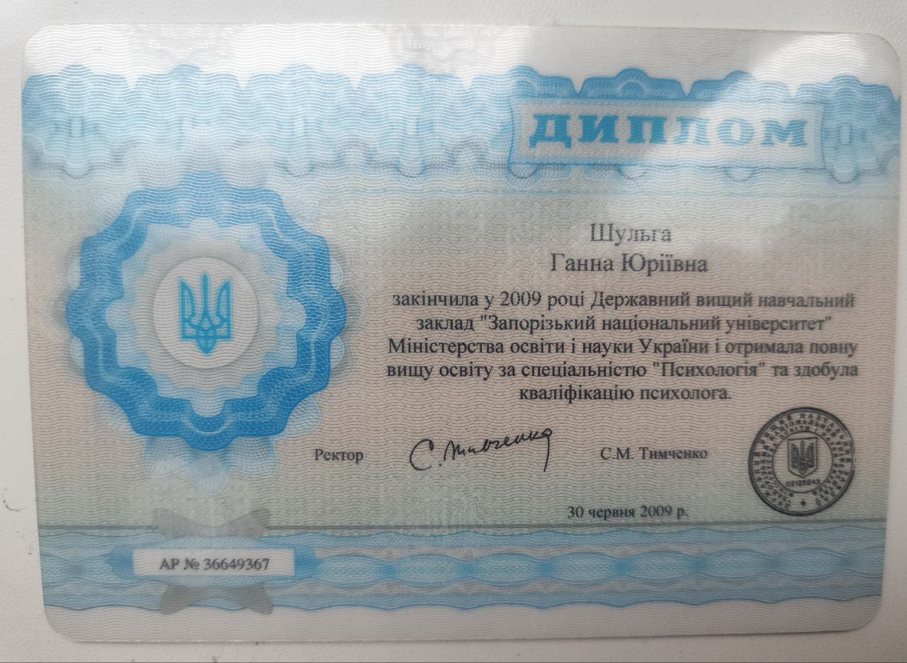
Запорізький національний університет, 2009 рік.
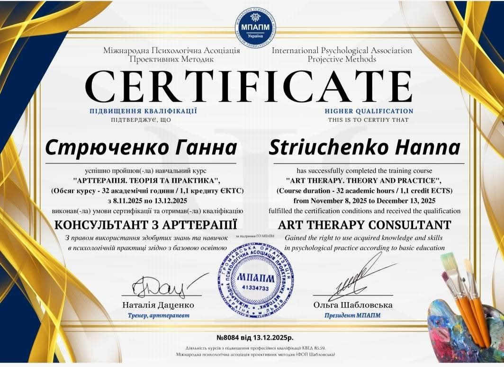
Теорія, практика та кваліфікація консультанта з арт-терапії.
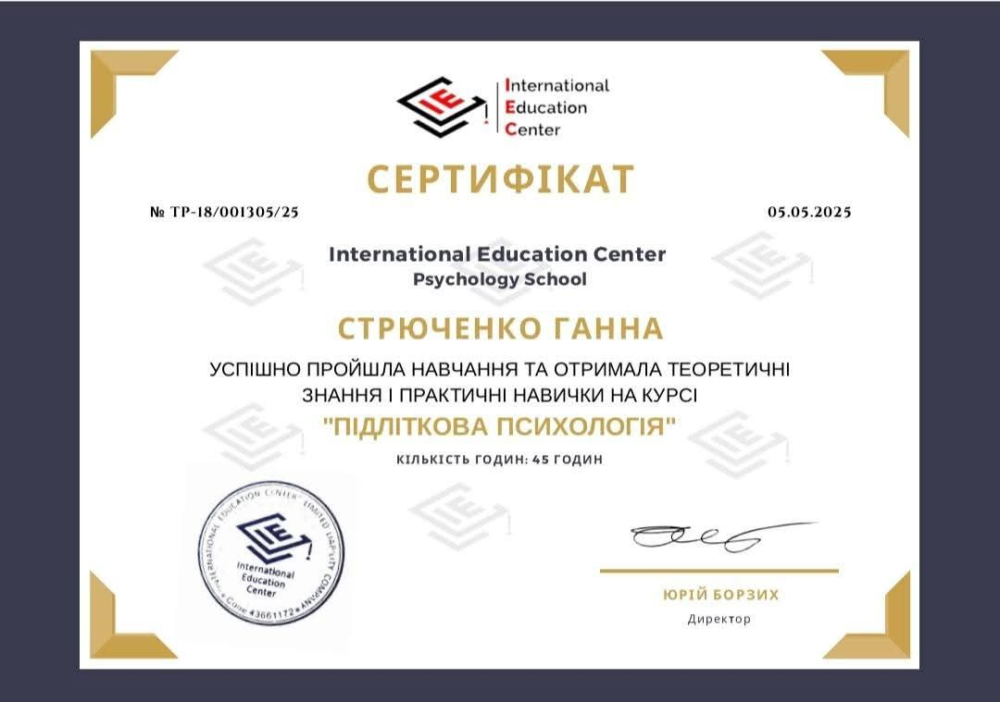
Окрема програма навчання з теоретичними та практичними навичками.
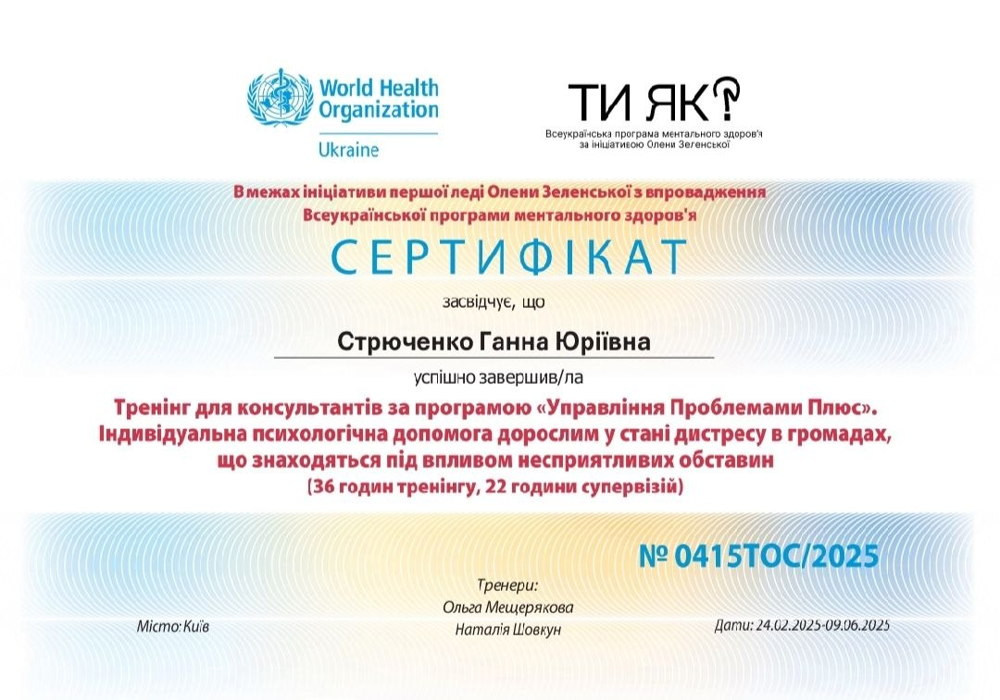
Індивідуальна психологічна допомога дорослим у стані дистресу.
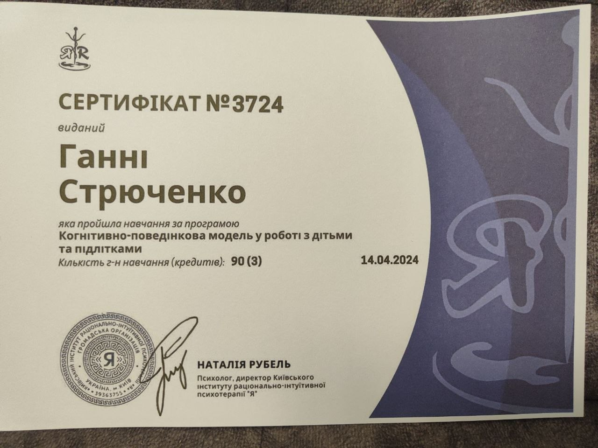
Поглиблена підготовка для психологічної роботи з молоддю.
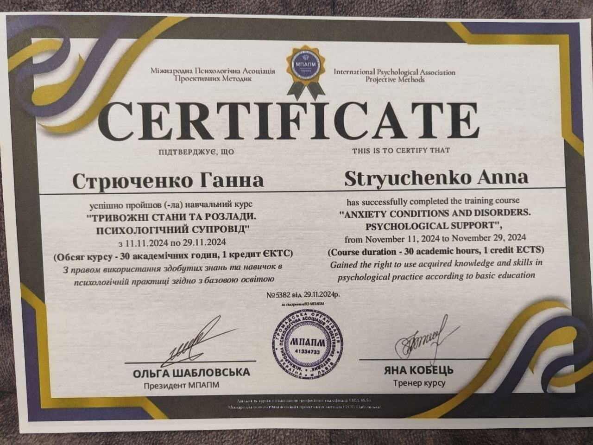
Психологічний супровід тривожних станів і відновлення опори.
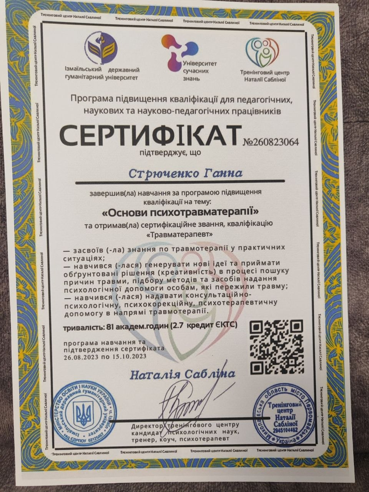
Навчальна програма з роботи з психотравмою в практичній допомозі.
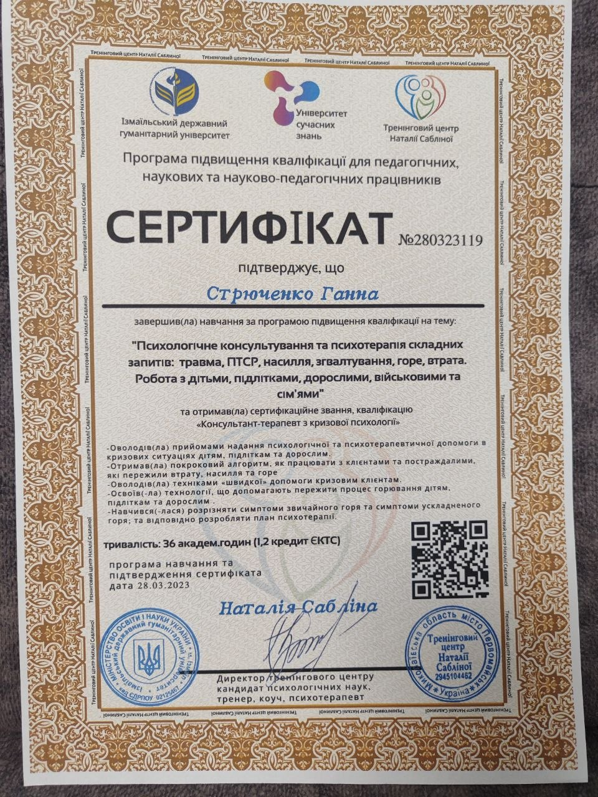
Психологічне консультування й терапія складних запитів, втрати та ПТСР.
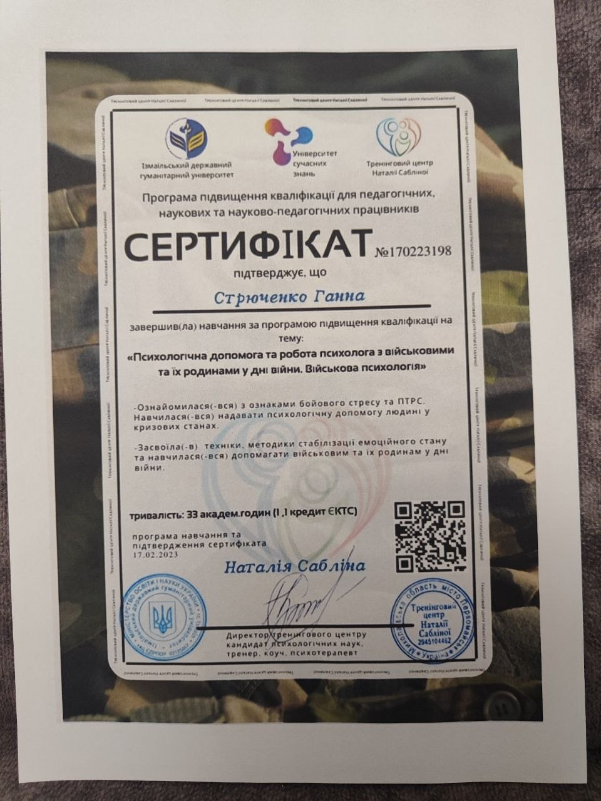
Невідкладна психосоціальна підтримка для учнів та вчителів.
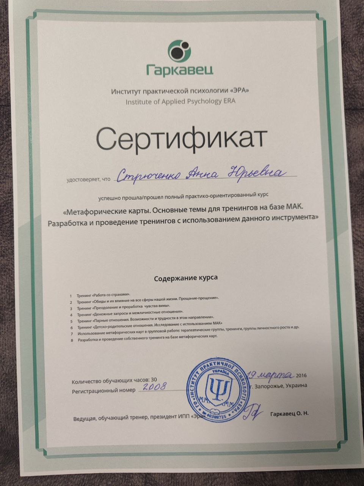
Практико-орієнтований курс для тренінгової та консультативної роботи.
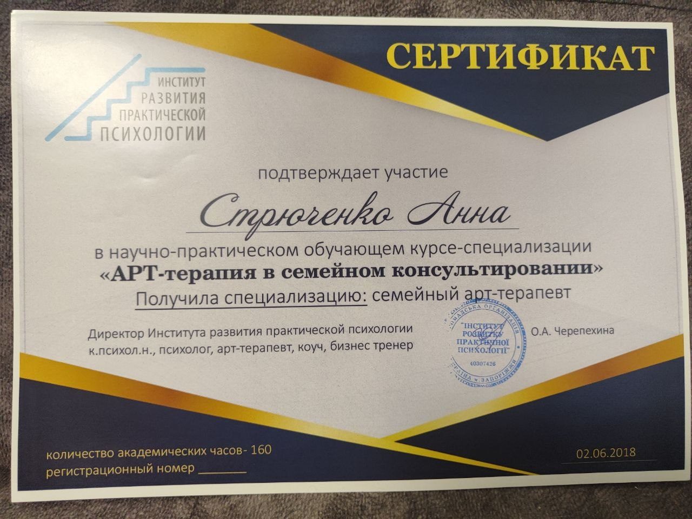
Курс-спеціалізація з арт-терапії в сімейному консультуванні.
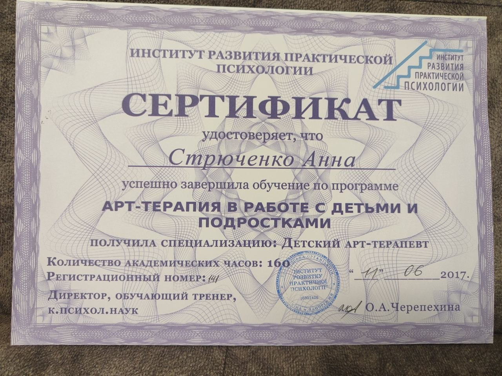
Навчальна програма з арт-терапії в роботі з дітьми та підлітками.
Формати роботи
Офлайн-зустрічі в Запоріжжі для індивідуальної психологічної підтримки та роботи із запитом у комфортному форматі.
ОфлайнПідходять для клієнтів з інших міст або для тих, кому зручніше працювати дистанційно в індивідуальному темпі.
Zoom / Google Meet / інший узгоджений форматМожливий виїзд в інші міста для VIP-консультацій, групових занять, тематичних зустрічей і тренінгів для клієнтів або спеціалістів.
За попереднім узгодженнямЯк проходить робота
Напишіть у Telegram або на email: коротко опишіть запит і бажаний формат роботи.
Разом визначаємо, що підходить саме вам: офлайн у Запоріжжі, онлайн чи виїзний формат.
Після узгодження формату домовляємося про зустріч, консультацію, групу або тренінг.
«У роботі для мене важливі професійність, етика, делікатність і повага до особистої історії кожної людини».
Принцип роботи«Індивідуальні консультації, групи та тренінги будуються на ясності, безпеці контакту та практичній користі для людини чи команди».
Для клієнтів і спеціалістівЗапис
Можливий виїзд в інші міста
VIP-консультації, групи та тренінги
У заявці можна обрати Telegram, Viber, WhatsApp, телефон або email
Поширені питання
Консультації можливі в Запоріжжі офлайн та онлайн. Формат підбирається залежно від запиту, міста та ваших можливостей.
Так, можливий виїзд для VIP-консультацій, групових занять і тренінгів для клієнтів або спеціалістів.
Так. Уже зібрано диплом психолога та велику добірку сертифікатів з арт-терапії, тривожних станів, підліткової психології, психотравматерапії, кризового консультування та суміжних напрямів.
Найзручніше — через Telegram @annastryuchenko або через форму на сайті, де можна обрати Telegram, Viber, WhatsApp, телефон чи email для зворотного зв'язку.
Запис і співпраця
Якщо вам відгукується мій підхід, залиште заявку у зручному для вас форматі. Разом погодимо формат консультації, групового заняття чи тренінгу.